Soldat is a unique 2D (side-view) multiplayer action game for Windows*. It has been influenced by the best of games such as Liero, Worms, Quake, and Counter-Strike and provides a fast-paced gaming experience with tons of blood and flesh. Soldiers fight against each other in 2D battle arenas using a deadly arsenal of military weapons, across 7 default game modes. The game is free to play, with optional registration unlocking mainly cosmetic features, such as colored jet flames and customizable interfaces.
* The game is not officially ported but may run on Mac & Linux with 3rd party programs. Read more.
The easiest way to start your very own first game is to use the in-game START GAME menu. Select the desired Game Style (aka Game Mode). In case you're unfamiliar with the mode's goal, it's shown there as well.
One second before that, make sure you know the Default Controls of the game (Note: some key binds are changeable on the Player menu)
You can pick between solo based modes such as: Deathmatch, Pointmatch & Rambomatch, or team based modes such as: Capture the Flag, Teammatch, Infiltration & Hold the Flag.
Once you're done doing that, there are a few settings you can adjust to reach the desired game format:
Now, click the [Start Game] big green button and start shooting, Soldier!
In order to start a multiplayer server at your own server (meaning people will join your session), follow these steps:
Using the in-game JOIN GAME menu, you can join other servers. If you already know the IP, Port & Password of the server, you can already fill each in the respective text field. If you want to search for active servers in the internet or LAN, click the "Request Servers" button.
Once you found the desirable server to join, click Join Game and start slaying!
Some of the above keys can be changed in the PLAYER in-game menu.
As the name implies, Deathmatch (often abbreviated: DM) is one of the seven default main game-modes in which the sole purpose is to kill everything that moves!
The player with the most frags, wins the match! The amount of frags can be checked with the [F1] button (Toggle scoreboard).
Recommended Respawn Time: 3-6 Seconds
Pointmatch (often abbreviated: PM) is one of the seven default main game-modes. It's very similar to Deathmatch, however there's a yellow flag in this game-mode. A player that holds the flag will be awarded with multiplied points (also for getting double/triple/multi kills/etc).
The player with the most points, wins the match!
Recommended Respawn Time: 3-6 Seconds
Rambomatch (often abbreviated: RM) is one of the seven default main game-modes. It is very similar to Deathmatch with one main tweak: There's a a Rambo Bow. The Bow spawns in a pre-set location in each map.
Points can be obtained solely by the player who's holding that weapon. The Bow has 1 mode with regular arrows, and by switching weapon (default button [Q]) it can shoot deadly flaming arrows. The flaming arrows explode upon hitting targets.
The player with the most frags, wins the match!
Recommended Respawn Time: 6-10 Seconds
Teammatch or Team Deathmatch (often abbreviated: TM or TDM) is one of the seven default main game-mode in which the sole purpose is for each team to kill as many players as possible from the other teams! There's a maximum of four teams to this game-mode: Alpha, Bravo, Charlie and Delta.
Each team's score is consisting of the sum of kills from all its players. In case Friendly Fire (FF) is on, points are not awarded for killing teammates.
Capture The Flag (often abbreviated: CTF) is one of the seven default main game-modes in which there are two teams: Alpha & Bravo. The goal is for each team to steal the enemy's flag and bring it to your own flag. The winner of each map is determined either by reaching Capture Limit (the amount of caps needed to finish a match before the time limit ends), or by having the most caps by the end of the round. There are 32 default CTF maps available in Soldat and hundreds of custom maps.
Infiltration (often abbreviated: INF) is one of the seven default main game-modes in which there are two teams: Alpha & Bravo.
The goal of the Alpha Team is to steal the black flag from Bravo Team's base, and bring it to the white flag (usually near the reds spawn place). Alpha team will be rewarded 30 points for each retrieved black flag.
The goal of the Bravo Team is to defend it. As long as the team manages to keep the black flag at their base, they'll be rewarded 1 point every 5 seconds.
Hold The Flag (often abbreviated: HTF) is one of the seven default main game-modes in which there are two teams: Alpha & Bravo. It is a very similar concept to Pointmatch but in a team-based format. The team that holds the yellow flag gets points every couple of seconds.
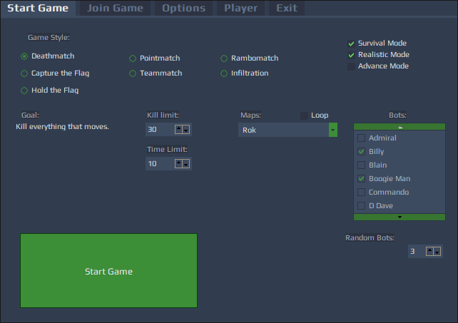
The list includes columns which allow you to sort the game by desired order, for example: Clicking the Name column title will arrange servers by name.
Additionally there are flags on the left hand side to indicate in which country every server is hosted.
Columns available: Name, Map, Players, Max (Players), Game Type, Ping, Speed, Dedicated, Password, Bots, Respawn Time, Bonuses, Realistic, System, IP, Port, Anti-Cheat.
Allows user to see only servers with desired values.
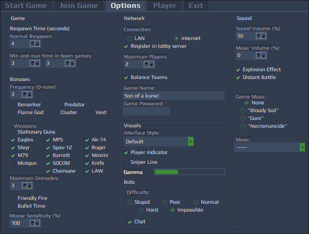
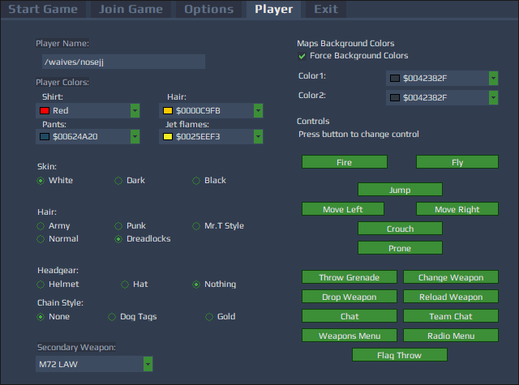
All major configuration edits for Soldat can be made in config.exe (in Soldat's installation folder).
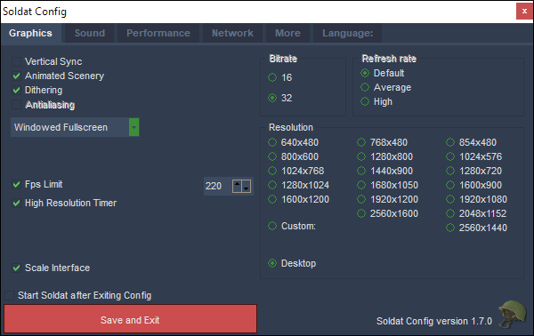
Vertical Sync (VSync) is used to synchronische the output of your graphics card (GPU) with the display of your monitor. When your graphics card has finished rendering the next frame, it waits for the monitor to finish displaying the current frame, before switching to a new one. This means that the maximum frame-rate achievable will be equal to the refresh rate of the monitor (60hz/75hz/85hz/100z/120hz/144hz/165hz/180hz/200hz/240hz).
If Vsync is disabled then your graphics card will continuously render without waiting for the last frame to be displayed in its entirety. With fast graphics cards this means that your monitor may switch to a new frame halfway down the screen. This effect is known as tearing as there appears to be a visible line separating two different halves.
(Note: Using this at the same time as FPS limiter, may cause FPS issues).
Allows seeing animated scenery on maps that use animated scenery.
It creates a dissolving effect when fading between neighbor colors. It can help remove gradients banding in the background.
Its purpose is to smoothen hard pixel-ish polygon edges. However it doesn’t work anymore after Soldat upgraded to HD graphics. Use your graphic card settings to further smoothen edges if desired.
Choose between Windowed / Fullscreen / Windowed Fullscreen.
Limits FPS (Frames Per Second). Some players have reported that this setting can reduce stutter issues. Some others need to disable it to get a smooth experience. Try both.
(Note: Using this at the same time as Vertical Sync, may cause FPS issues).
Sets the color depth of the game.
If you're using full-screen and don't have compatibility mode enabled then the refresh rate is being picked up and stuffed into DirectX.
Note: Bitrate & Refresh rate values are not used in the game, therefore it is not possible to change it in config.exe anymore. Effective bitrate is decided by video driver. Soldat will use 32bit textures regardless.
Scales the interface images to your screen's resolution.
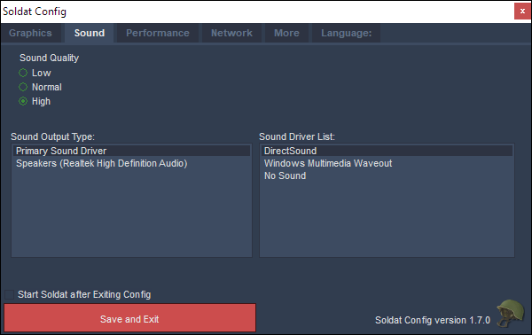
Select sound quality for the game. It affects overall quality of each and every sound heard in game (Note: Low Quality level can may help improve performance in some cases).
DirectSound will determine the driver by itself. No sound if you want Soldat to not have sound at all.
Select with Sound Device and Drivers Soldat should use to output all Game sounds.
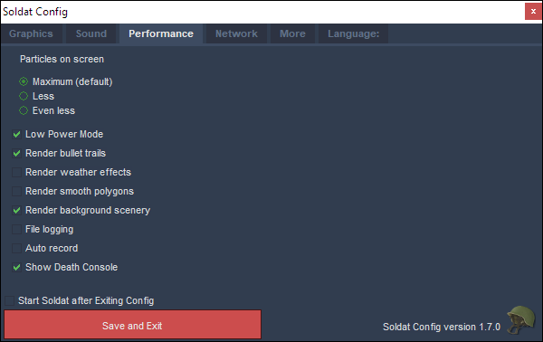
Limits the particles showing on screen. There's also a setting in soldat.ini where you can set the number of particles even lower than 'Even less'. If you set it at its lowest (Max_Particles=43) you will sometimes not see jetpacks or explosion images if there's a lot of action going on (Note: Better left at default).
Renders a trail after a projectile, making it easier to see the projectile trajectory (doesn't apply to knives).
Enables rain, snow and wind visuals. (Note: If turned off you will still hear the sound of weather effects).
Draws edges around polygons when enabled. The edges images used are located in Soldat\textures\edges, and has the same name as the texture used for the map.
Turns on drawing of scenery set behind players and polygons. Might hide essential scenery on unofficial game modes and unofficial maps.
Saves log files of in-game occurrences.
Automatically records and saves a demo of every map you play into Soldat\demos. Usage: mandatory in the competitive scene to assure fair play, movie making purposes and tactics assessment.
Shows a list of of kills and deaths on the upper right side of the screen. One can also customize the length of it in soldat.ini with the KillConsole_Length=7 value.
(Note: Since the rendering of fonts is slow in soldat, turning it off can result in an increase of FPS. However, this one's a major advantage for game-play so not very recommended).
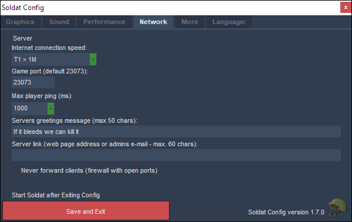
These Settings affect only Local Server hosting.
Select the type of connection the computer uses (Note: this option doesn't do anything beside putting different icon in speed tab in Lobby).
Select the Port that you are going to use. More info about ports in the Ports page
Select the maximum ping that users can play with on your server before getting kicked.
If the player's ping value will be continuously higher than the set value, he'll get ping kicked.
Write a greeting message sent upon joining of other users to your server.
Write here a webpage or an email in which players can contact you.
This feature is broken at the moment.
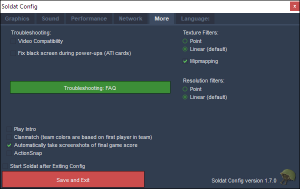
This function may improve performance for older GPUs. It forces OpenGL to use "fixed pipeline" (meaning no shaders).
Old ATI graphics cards would sometimes draw the bonus overlay for Berserker, flame god, and predator without the alpha (transparency) value, making the screen appear blank. This option disables drawing it completely.
Changes how the pixels of the map texture are interpolated when the textures are stretched (Note: Better left at default unless you're running on a low-end computer).
In this case "Texture" actually covers all images rendered (map, scenery, sprites, interface, etc).
Generate pre-filtered versions of texture or scenery, so that when you render it at a smaller size, it has both good looks and fast performance.
Changes how pixels of the render target texture are interpolated when the texture is stretched over a screen area that has a different resolution than the resolution of the texture itself (Note: Better left at default).
Plays intro.sdm demo on startup.
Team colors are based on first player in team
Mandatory in some leagues such as SCTFL.
Press F5 after Killing/Dying and you can view+save that special moment!
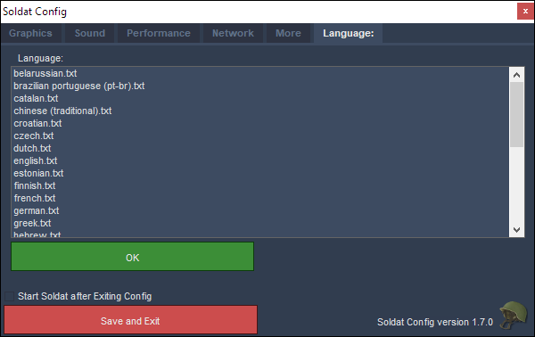
Pick requested language translation for the game.
Non-standard options are available in the "soldat.ini" file.
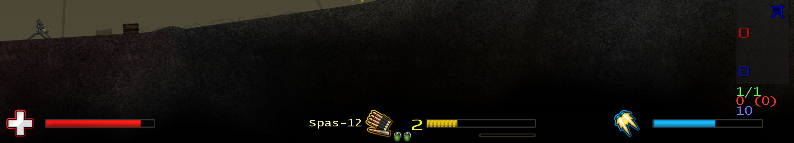
The Bars in the bottom of the screen are:
Additionally to the default HUD, there are custom interfaces installed with the game. They are selectable for registered users in the Options Menu. List of custom interfaces:
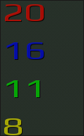
In Capture the Flag and Infiltration modes, there's a red number indicating Alpha's score, and a blue number indicating Bravo's score.
In a Teammatch game the scores counter will show two additional number: yellow for Charlie's score and green for Delta's score.
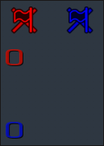
When a flag is out of the default flag-spot, there'll be a missing flag indicator (see the blue flag icon on the lower right hand side of the image).
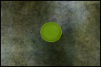
In a network game a ping indicator in the shape of the dot is placed on the upper right hand side of the screen. The bigger it is, the higher the ping is. It is color coded as well.
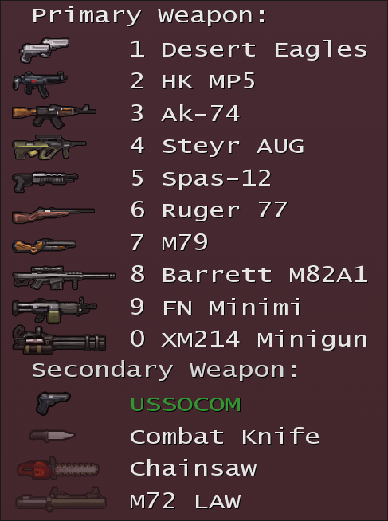
There are overall 21 different weapons split into 3 groups at each player's disposal in Soldat.
To select a weapon rapidly while waiting for re-spawn, use the numerical buttons 1-9, 0 for primary weapons, and use CTRL+1/2/3/4 for secondary weapons.
It is possible to throw a weapon and pickup another. You can carry two weapons (Primary & Secondary / Primary & Primary).
It's possible to set your default secondary on the in-game PLAYER menu. Useful if you have an overall preferred one.
The Desert Eagles or in their full name IMI Desert Eagles (IMI - Israeli Military Industries) is a semi automatic hand-gun that can break a man's arm. In Soldat it's an Akimbo weapon! It has a unique feature of firing two shots at a time.
The HK MP5 (The Heckler & Koch MP5) is one of the most popular submachine-gun in the world (from German: Maschinenpistole 5, meaning Submachine gun 5). Fast and furious. In short ranges it can defeat heavy weapons. It is a 9mm submachine gun of German design, developed in the 1960s by a team of engineers from the German small arms manufacturer Heckler & Koch GmbH (H&K) of Oberndorf am Neckar.
The AK-74 (Russian: Автомат Калашникова образца 1974 года or "Kalashnikov automatic rifle model 1974") Modified version by Russian designer Mikhail Kalashnikov as the replacement for the earlier AKM (itself a refined version of the AK-47). Weapon of terrorists and most of world's army forces. The best assault rifle in the world for the past 50 years. It uses a smaller 5.45×39mm cartridge, replacing the 7.62×39mm chambering of earlier Kalashnikov-pattern weapons.
The Steyr AUG (Armee-Universal-Gewehr — "universal army rifle") is an Austrian 5.56×45mm NATO bullpup assault rifle, designed in the 1960s by Steyr-Daimler-Puch. It may look like a toy, but try it and you'll realize quickly enough, it sure isn't. With great speed it spits out bullets killing everything in a fast attack.
The Franchi Spas-12 is a combat shotgun manufactured by Italian firearms company Franchi from 1979 to 2000. It is capable of creating massacre with its 12-Gauge bullets. The best weapon for close-contact. The SPAS-12 was sold to military and police users worldwide on the civilian market and has been featured in many movies, TV shows, and video games.
The Ruger-77 is a hunting rifle. Very fast and accurate. Good for hunting deers and people. It has a removable rotary magazine which allows the magazine to fit flush with the bottom of the stock.
The M79 is the famous US grenade launcher, first used in the Vietnam War. The Viet-Cong quickly ran to the bushes when they heard its characteristic sound. The 40mm grenade can blast anyone into pieces even after a shot behind a hill. Because of its distinctive report, it has earned the nicknames of "Thumper", "Thump-Gun", "Bloop Tube", "Big Ed", and "Blooper" among American soldiers as well as "Can Cannon" in reference to the grenade size; Australian units referred to it as the "Wombat Gun".
The Barrett M82A1 is a sniper rifle with incredible power. It is a recoil-operated, semi-automatic anti-materiel rifle developed by the American Barrett Firearms Manufacturing company. It was designed to pierce tank armor. The military didn't even plan to use it against people. But who cares?
The FN MinimiFN Minimi (M249) (short for French: Mini Mitrailleuse; "mini machine gun") is a Belgian 5.56mm Squad Automatic Weapon, first introduced in the late 1970. is the best machine gun with great firepower. Can be very helpful for backing-up your team.
The XM214 Minigun is an American prototype 5.56 mm rotary-barreled machine gun. It is the famous "O'll Painless" from the movie Predator. This chaingun is mounted on army helicopters. It uses a tremendous amount of ammo and can kill the same amount of enemies. Also known as the Microgun, the XM214 was a scaled-down i.e. physically substantially smaller and lighter version of the M134 "minigun", firing M193 5.56×45mm ammunition.
The USSOCOM is a semi-automatic large-frame pistol chambered in .45 ACP. designed specifically to be an offensive pistol. The USSOCOM MK23 was adopted by the United States Special Operations Command (USSOCOM) for special operations units beating out the nearest competitor, Colt's OHWS. It is the default secondary weapon in Soldat. You can change the default secondary in the in-game PLAYER menu.
The Combat Knife a Standard infantry knife. A combat knife is a fighting knife designed solely for military use and primarily intended for hand-to-hand or close combat fighting. One direct hit with this little thing eliminates the enemy at once. In Soldat it is widely used as a throwing weapon and it is very deadly from most angles. The longer you'll hold the throw weapon button (Default Key: [F]), the further the knife will go. There's even a whole community dedicated to playing Knife Only.
The Chainsaw may seem at first as a useless weapon, but with the adequate set of skills and mastering of Soldat's movement mechanics, it can serve as a very deadly secondary weapon and provide a quick kill.
The M72 LAW (Light Anti-Tank Weapon) is a portable one-shot 66-mm unguided anti-tank weapon. It fires an explosive missile. Can be used only from the crouch position (deafult button: [C]).
Every player is pre-equipped with Frag Grenades. These can be used for blasting your enemies or for boosting on various colliders to gain speed. The grenade amount can be limited between: 0 to 5.
The Cluster Grenade will release additional charges in a small radius and cause a chain of explosions upon its detonation. This weapon is an additional weapon and can be obtained only through the Cluster Grenade bonus kit.
The Flamethrower is a mechanical incendiary device designed to project a long, controllable stream of fire. They were first used by the Greeks in the 1st century AD. In modern times, they were used during World War I, and more widely in World War II. This weapon is an additional weapon and can be obtained only through the Flame God bonus kit (if bonuses are enabled).
Rambo Bow is the famous Bow of John Rambo available in Rambomatch mode. Great for stealth operations. Silent, fast as lightning and lethal. You can change to exploding arrows (default key: [Q]).
Flamed Arrows are creating an explosion upon hitting targets. It is available in Rambomatch game-mode. In order to use it, one must first obtain the Rambo Bow and change to the "Secondary" of this weapon (default key: [Q]).
The Stationary Gun (M2 MG) is a fully automatic heavy machine gun bound to specific locations in the maps. It serves mostly for defensive purposes. The stat-guns are featured only in a small portion of maps, and they're bound to specific pre-made locations in those maps. The stat-guns are turned on by default on your local settings in the in-game OPTIONS menu, you can also disable it there
Weapons settings are modifiable by editing the file "weapons.ini".
If bonuses are enabled in the game's Options or "soldat.ini", a player may obtain the following bonuses:
Regenerates health to the maximum level.
Grants the maximum amount of frag grenades one can carry (1-5).
3 grenades that release additional charges in a small radius and cause a chain of explosions upon its detonation.
Personal armor. Basically an addition of 100% health points.
Grants Flamethrower weapon and immortality. Duration: 10 seconds.
Massacre! Berserker makes your weapons four times stronger. Duration: 15 seconds.
Invisibility. Enemies can still hear sounds you make, and blood makes you more visible. Duration: 25 seconds.
After pressing the "/" key you can enter one of the following commands:
| KILL | Harakiri. |
| BRUTALKILL | Very harakiri. |
| SMOKE | Player lights or ends a cigar. |
| TABAC | Player chews tobacco. |
| TAKEOFF | Player takes headgear. |
| VICTORY | Player cheers. |
| PAUSE/UNPAUSE | Toggle Game-Pause |
| ADDBOT bots name | Adds a new bot to the game. |
| KICK players name or players number | Removes a player/bot from the game. |
| BAN players name or players number | Bans the player on the server so he can't join in again. |
| BANIP IP number | Bans the IP number. |
| UNBAN IP number | Unbans the IP number. |
| MAP map name | Changes the map. |
| RESTART | Resets the current match. |
| NEXTMAP | Changes the map to the next one in the list. |
| ADM players name | Adds the player to the Remote Admins list. |
| ADMIP IP number | Adds the IP number to the Remote Admins list. |
| UNADM IP number | Removes the IP number from the Remote Admins list. |
| KICKLAST | Kicks the last player that entered the game. |
| RESPAWNTIME seconds | Changes the respawn time. |
| MAXRESPAWNTIME seconds | Changes the maximum respawn time in team games. |
| LIMIT number | Changes the current kill/point/capture limit. |
| TIMELIMIT minutes | Changes the current time limit. |
| PASSWORD text | Changes the game server password (temporarily). |
| SETTEAMx player number | Forces the player to join team x. |
| ADDBOTx bots name | Adds a bot to team x. |
| FRIENDLYFIRE 0/1 | Friendly fire on or off. |
| VOTE% 0-100 | Changes the percentage of players needed to vote something. |
| BONUS 0-5 | Frequency of bonuses 0-none, 5- lots. |
| MAXPLAYERS 1-32 | Maximum players allowed on server. |
| LOADCON | Reloads soldat.ini server settings. |
| LOADLIST xxx | Loads the mapslist from xxx.txt. |
| LOADWEP xxx | Reloads weapons.ini weapon settings or from file xxx.ini. |
| GAMEMODE 0-6 | Changes the gamemode (0 DM, 1 PM, 2 TM, 3 CTF, 4 RM, 5 INF, 6 HTF). |
| REALISTIC 0/1 | Switches realistic mode. |
| ADVANCE 0/1 | Switches advance mode. |
| SURVIVAL 0/1 | Switches survival mode. |
| KILL players name or players number | Kills/punishes the player. |
| BANLAST | Like /kicklast, bans for 1 hour the last player that joined. |
| UNBANLAST | Unbans the last player that was banned. |
| LOBBY | Reregisters the server in the lobby. |
| SAY text | Sends a text message to all players on the server. |
| ADMINLOG password | Used to login as game server admin. |
| INFO | Retrieves useful information from the server. |
| MUTE players name or players number | Mutes the player so you don't see his chat. |
| UNMUTE players name or players number | Unmutes the player. |
| MUTEALL | Mutes all players. |
| RECORD name | Records a demo stored in the Soldat\Demos folder. |
| STOP | Stops the recording of a demo. |
These are the parameters that can be used when running Soldat.exe:
Starts a Soldat dedicated server.
Starts the game without entering the menu.
Runs the dedicated server automatically.
Runs the game and connects to IPnumber, port and password are optional.
Example:
Soldat.exe -join 192.168.0.1
Soldat.exe -join 127.0.0.1 23073 tikikaka
Runs the game and plays the demo specified by name. Optional paramaters are:
The sound can be extracted with a program like "Total Recorder". Please note that this can take time and is not recommended on slower systems. For better results specify lower speed (like 50%).
Example:
Soldat.exe -demo demo12
Soldat.exe -demo demo19 1 200 1 0
Starts the game with a Soldat mod located in Soldat\Mods\xxx
When running your server from the command line, you can take advantage of what is known as command line arguments.This is, basically, sending data to the binary on-the-fly from the interpreter (shell), such as MS-DOS or bash.
| -d ./soldatserver -d |
Starts your server as a Daemon (runs in the background, even when you log off). Linux only. |
| -pid ./soldatserver -pid soldatserver.pid |
Sets the Process ID file name. Located in the /logs/ folder (soldatserver.pid by default). |
| -m ./soldatserver -m xx.txt |
Sets the default mapslist file to xx.txt (mapslist.txt by default). |
| -c ./soldatserver -c x.ini |
Sets the default configuration file to x.ini (Soldat.ini by default). |
| -p ./soldatserver -p 23073 |
Start the server on a specific port. |
| -l ./soldatserver -l 12 |
Limits the number of players that can join the server. |
| -k ./soldatserver -k "my clan only" |
Sets a password that will be required by anyone who tries to join. |
| -b ./soldatserver -b "72.232.225.66" |
Binds the server to a specific IP Address. Use with caution! You cannot bind to an IP that isn't assigned to your network card! |
| -s ./soldatserver -s # |
Enable/Disable the SoldatServer Scripting Engine. #: 1 = enabled, 0 = disabled. |
| -safe ./soldatserver -safe # |
Enable/Disable Safe Mode for Scripts (On by default). #: 1 = enabled, 0 = disabled. |
| -lock ./soldatserver -lock # |
Enable/Disable Locked Mode (Off by default). When Locked Mode is enabled, admins will not be able to type /loadcon, /password or /maxplayers. #: 1 = enabled, 0 = disabled. |
| -disallow ./soldatserver -disallow "GetURL,ReadFile" |
Disable certain script functions from being used by scripts. Note that this will cause any scripts that use these functions to crash with an "unknown identifier GetURL" error. |
| -debug ./soldatserver -debug # |
Enable/Disable Debug Mode (See Debug_Mode in soldat.ini). #: 0 = No Debug, 1 = Lobby Debug, 2 = Advanced Debug, 3 = Script Core Debug If you find a bug and report it, please use Debug Mode 2. It helps us alot. |
| -ns ./soldatserver -ns 192.168.2.1 |
Set the Nameserver your Soldat Server will use to resolve the Lobby DNS. Only use this if you know what you are doing! The server should automatically detect what Nameserver your computer uses! |
| -ls ./soldatserver -ls # |
Set the maximum number of scripts which can be loaded by this server. |
The default button for Chat function is [T] (for team chat [Y]), to send it press ENTER.
You can use ready taunts from the file taunts.txt (placed in the Soldat folder or your profile folder) by using the ALT button + alpha-numeric keyboard buttons.
If you want your chat text to appear in the console only for your teammates insert "^" before the text, like this: ^Whats up!
A dedicated server is used to run a faster Soldat server without a player in it.
You can do this in two ways:
If you want the server to start the game automatically do this:
Players from outside the server can control it. To give this option to a player add him to the Remote Admins list. The commands for this are described here COMMANDS.
Important! - If you have a firewall you should open the UDP game ports
Default Port: 23073 for the server (can be changed in Soldat Setup) , client uses a default port: 23083 (can't be changed)
There is an option to join firewall servers without opening the ports, but only through the lobby server (through the server list - forwarding).
The Soldat server uses the following ports:
UDP: game port (default 23073)
TCP/IP: admin port = game port (default 23073)
TCP/IP: files port = game port + 10 (default 23083)
Soldat and all the file formats the program produces are Copyright © 2001-2018 Michal Marcinkowski. All rights reserved.
Soldat is a freeware application. It is fully playable for free. Although, you can register for extra features. If you like the game please consider registering.
Provided that you verify that you are distributing the Shareware Version you are hereby licensed to:
1. make as many copies of the Shareware version of this software and documentation as you wish
2. give exact copies of the original Shareware version to anyone
3. distribute the Shareware version of the software and documentation in its unmodified form via electronic means (e-mail, web page, diskette, CD including magazine Cover CDs)
There is no charge for any of the above.
You may not, for any purpose, distribute copies of registered versions of this software, documentation or related materials to any third-parties.
No portion of this software may be disassembled, reverse engineered, decompiled, modified or altered.
All graphics and sounds may be modified except maps and scenery files. Modified graphics and sounds can be distributed for free as game MODs.
This Software is supplied "AS IS" and no liability will be accepted by Michal Marcinkowski or any legal vendors of this software for any damage incurred by the use of this software.
Neither directly nor indirectly you cannot rent or sell by any means this software.
Thanks to all the translators, I couldn't keep track who made what part of the translation, a big thanks for all who helped out the local communities and who I forgot to mention.